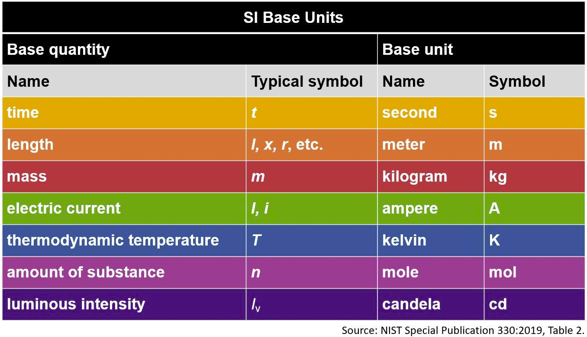

Table of SI units by US National Institute of Standards
and Technology (NIST)
We can avoid the need for powers-of-ten notation by adjusting the measurement units assigned to a numerical vector. For example, we can convert \(101.3 \times 10^{3}\) Pa to 1013 hPa or 101.3 kPa.
We use the units package for this feature. The
formatdown::format_units() function is a wrapper for
units::as_units(), allowing us to assign basic physical
units to a numerical vector and performing unit conversions that
transform the numerical value to match the new measurements units.
As a brief illustration, consider a pressure measurement of 101,300 Pa.
# Scalar value assigned a measurement unit
x <- 101300
units(x) <- "Pa"
# Original value
format_units(x, big_mark = ",")
#> [1] "101,300 [Pa]"
# Convert to hPa
format_units(x, unit = "hPa")
#> [1] "1013 [hPa]"
# Convert to psi
format_units(x, digits = 3, unit = "psi")
#> [1] "14.7 [psi]"These values are rendered using inline R code in an .Rmd
or .qmd output document as follows:
Original pressure measurement: 101,300 [Pa]
Convert measurement units: 1013 [hPa]
Convert measurement units: 14.7 [psi]
Like other formatdown functions,
format_units() operates on a numerical vector to output a
character vector for rendering in an R Markdown or Quarto Markdown
document. Unlike format_power() however,
format_units() does not apply inline math delimiters.
format_units()
Given a number, a numerical vector, or a numerical column from a data
frame, format_units() converts the numbers to character
strings of the form,
"a [u]" where a is the number and u is the
measurement unit. The user can specify the number of significant
digits.
Arguments.
x Vector to be formatted, of class numeric or class units. Can be a scalar, a vector, or a column from a data frame.
digits Numeric scalar, a positive integer. Applied as the digits argument of
base::format(). Enough decimal places are included such that the smallest magnitude value has this many significant digits.unit Character scalar, units label compatible with
unitspackage.unit_form Character scalar. Possible values are “standard” (default) and “implicit” (implicit exponent form). In standard form, units are related with arithmetic symbols for multiplication, division, and powers, e.g.,
"kg/m^3"or"W/(m*K)". In implicit exponent form, symbols are separated by spaces and numbers represent exponents, e.g.,"kg m-3"or"W m-1 K-1".big_mark Character. Applied as the
big.markargument ofbase::format(). Default is"". If a period is selected forbig_mark, the decimal mark is changed to a comma.
If you are writing your own script to follow along, we use these packages in this vignette:
Scalar
Assign a value and units,
x <- 101300
units(x) <- "Pa"Use with inline R code.
`r format_units(x)`
`r format_units(x, unit = "hPa")`which, in an .Rmd or .qmd document, are
rendered as
- 101300 [Pa].
- 1013 [hPa].
Vector
The atmos data set included with formatdown
has an altitude variable alt in meters. The columns do not
include units metadata. Column is class numeric.
# Variable is class numeric
x <- atmos$alt
x
#> [1] 0 10000 20000 30000 40000 50000 60000 70000 80000
class(x)
#> [1] "numeric"Assign measurement units to match the source values and format. Results are class character.
x_char <- format_units(x, unit = "m")
x_char
#> [1] "0 [m]" "10000 [m]" "20000 [m]" "30000 [m]" "40000 [m]" "50000 [m]"
#> [7] "60000 [m]" "70000 [m]" "80000 [m]"If we intend to convert the units, e.g., from meters to kilometers,
we have to assign the source measurement units before using
format_units(). Results are numeric, class units.
# Assign units before formatting
units(x) <- "m"
x
#> Units: [m]
#> [1] 0 10000 20000 30000 40000 50000 60000 70000 80000
class(x)
#> [1] "units"Convert units and format. The numbers change to match the unit conversion. Results are class character.
# Covert units and format as character
x_char <- format_units(x, unit = "km")
x_char
#> [1] "0 [km]" "10 [km]" "20 [km]" "30 [km]" "40 [km]" "50 [km]" "60 [km]"
#> [8] "70 [km]" "80 [km]"Digits
The digits argument sets the number of significant
digits. Here, temperature values (K) are reported to 4 significant
digits.
x <- sort(atmos$temp, decreasing = TRUE)
format_units(x, digits = 4, unit = "K")
#> [1] "288.1 [K]" "270.6 [K]" "250.3 [K]" "247.0 [K]" "226.5 [K]" "223.2 [K]"
#> [7] "219.6 [K]" "216.7 [K]" "198.6 [K]"With values in decimal form, reducing digits to 3 has
the expected effect of rounding to the units place.
format_units(x, digits = 3, unit = "K")
#> [1] "288 [K]" "271 [K]" "250 [K]" "247 [K]" "227 [K]" "223 [K]" "220 [K]"
#> [8] "217 [K]" "199 [K]"However, reducing digits to 2 has no additional effect.
To reduce the number of significant digits further, we apply
signif() to the numerical values before formatting with
format_units().
# Values are not converted to 2 significant digits
format_units(x, digits = 2, unit = "K")
#> [1] "288 [K]" "271 [K]" "250 [K]" "247 [K]" "227 [K]" "223 [K]" "220 [K]"
#> [8] "217 [K]" "199 [K]"
# Apply signif() before formatting
format_units(signif(x, 2), unit = "K")
#> [1] "290 [K]" "270 [K]" "250 [K]" "250 [K]" "230 [K]" "220 [K]" "220 [K]"
#> [8] "220 [K]" "200 [K]"If values span different orders of magnitude, the number of significant digits is applied to the smallest magnitude value and the number of decimal places in the other values is set to match.
For example, from the metals data set included with
formatdown, the elastic modulus values (Pa) are converted
to (GPa) with digits = 3.
x <- sort(metals$elast_mod, decreasing = TRUE)
units(x) <- "Pa"
format_units(x, digits = 3, unit = "GPa")
#> [1] "206.8 [GPa]" "146.9 [GPa]" "117.2 [GPa]" "102.0 [GPa]" "73.1 [GPa]"
#> [6] "13.8 [GPa]"Three digits applied to the smallest magnitude value yields “13.8 [GPa]”. Larger values are then formatted to the same number of decimal places. Thus some larger values will have more than three digits, e.g., “206.8 [GPa]”.
Data frame
Using the atmos data set include with
formatdown with various atmospheric properties as a
function of height above sea level.
# Data set included with formatdown
DT <- copy(atmos)
# Render in document
knitr::kable(DT, align = "r")| alt | temp | pres | dens | sound |
|---|---|---|---|---|
| 0 | 288.15 | 101300.00 | 1.23e+00 | 340.29 |
| 10000 | 223.25 | 26500.00 | 4.14e-01 | 299.53 |
| 20000 | 216.65 | 5529.00 | 8.89e-02 | 295.07 |
| 30000 | 226.51 | 1197.00 | 1.84e-02 | 301.71 |
| 40000 | 250.35 | 287.00 | 4.00e-03 | 317.19 |
| 50000 | 270.65 | 80.00 | 1.03e-03 | 329.80 |
| 60000 | 247.02 | 22.00 | 3.10e-04 | 315.07 |
| 70000 | 219.59 | 5.22 | 8.28e-05 | 297.06 |
| 80000 | 198.64 | 1.05 | 1.85e-05 | 282.54 |
Formatting one column at a time, assigning and converting units, and
assigning significant digits ad-hoc. When numerical values in a column
span a number of orders of magnitude, the number in the column with the
smallest magnitude, e.g., pressure or density last row, is displayed
with the number of significant digits specified by the
digits argument.
units(DT$alt) <- "m"
DT[, alt := format_units(alt, unit = "km")]
units(DT$temp) <- "K"
DT[, temp := format_units(temp, 3, unit = "deg_C")]
units(DT$pres) <- "Pa"
DT[, pres := format_units(pres, unit = "hPa")]
units(DT$dens) <- "kg/m^3"
DT[, dens := format_units(dens, unit = "g/m^3", unit_form = "implicit")]
units(DT$sound) <- "m/s"
DT[, sound := format_units(sound, 4)]
knitr::kable(
DT,
align = "r",
col.names = c("Altitude", "Temperature", "Pressure", "Density", "Speed of sound")
)| Altitude | Temperature | Pressure | Density | Speed of sound |
|---|---|---|---|---|
| 0 [km] | 15.0 [°C] | 1013.00 [hPa] | 1230.00 [g m-3] | 340.3 [m/s] |
| 10 [km] | -49.9 [°C] | 265.00 [hPa] | 414.00 [g m-3] | 299.5 [m/s] |
| 20 [km] | -56.5 [°C] | 55.29 [hPa] | 88.90 [g m-3] | 295.1 [m/s] |
| 30 [km] | -46.6 [°C] | 11.97 [hPa] | 18.40 [g m-3] | 301.7 [m/s] |
| 40 [km] | -22.8 [°C] | 2.87 [hPa] | 4.00 [g m-3] | 317.2 [m/s] |
| 50 [km] | -2.5 [°C] | 0.80 [hPa] | 1.03 [g m-3] | 329.8 [m/s] |
| 60 [km] | -26.1 [°C] | 0.22 [hPa] | 0.31 [g m-3] | 315.1 [m/s] |
| 70 [km] | -53.6 [°C] | 0.05 [hPa] | 0.08 [g m-3] | 297.1 [m/s] |
| 80 [km] | -74.5 [°C] | 0.01 [hPa] | 0.02 [g m-3] | 282.5 [m/s] |
US customary units
The same table can be formatted in US customary units as shown below.
# Data set included with formatdown
DT <- copy(atmos)
units(DT$alt) <- "m"
DT[, alt := format_units(alt, unit = "ft")]
units(DT$temp) <- "K"
DT[, temp := format_units(temp, 2, unit = "deg_F")]
units(DT$pres) <- "Pa"
DT[, pres := format_units(pres, unit = "psi")]
units(DT$dens) <- "kg/m^3"
DT[, dens := format_units(dens, unit = "lb/ft^3", unit_form = "implicit")]
units(DT$sound) <- "m/s"
DT[, sound := format_units(sound, 4, unit = "ft/s")]
knitr::kable(
DT,
align = "r",
col.names = c("Altitude", "Temperature", "Pressure", "Density", "Speed of sound")
)| Altitude | Temperature | Pressure | Density | Speed of sound |
|---|---|---|---|---|
| 0 [ft] | 59 [deg_F] | 14.6923 [psi] | 0.076786 [lb ft-3] | 1116.4 [ft/s] |
| 32808 [ft] | -58 [deg_F] | 3.8435 [psi] | 0.025845 [lb ft-3] | 982.7 [ft/s] |
| 65617 [ft] | -70 [deg_F] | 0.8019 [psi] | 0.005550 [lb ft-3] | 968.1 [ft/s] |
| 98425 [ft] | -52 [deg_F] | 0.1736 [psi] | 0.001149 [lb ft-3] | 989.9 [ft/s] |
| 131234 [ft] | -9 [deg_F] | 0.0416 [psi] | 0.000250 [lb ft-3] | 1040.6 [ft/s] |
| 164042 [ft] | 27 [deg_F] | 0.0116 [psi] | 0.000064 [lb ft-3] | 1082.0 [ft/s] |
| 196850 [ft] | -15 [deg_F] | 0.0032 [psi] | 0.000019 [lb ft-3] | 1033.7 [ft/s] |
| 229659 [ft] | -64 [deg_F] | 0.0008 [psi] | 0.000005 [lb ft-3] | 974.6 [ft/s] |
| 262467 [ft] | -102 [deg_F] | 0.0002 [psi] | 0.000001 [lb ft-3] | 927.0 [ft/s] |